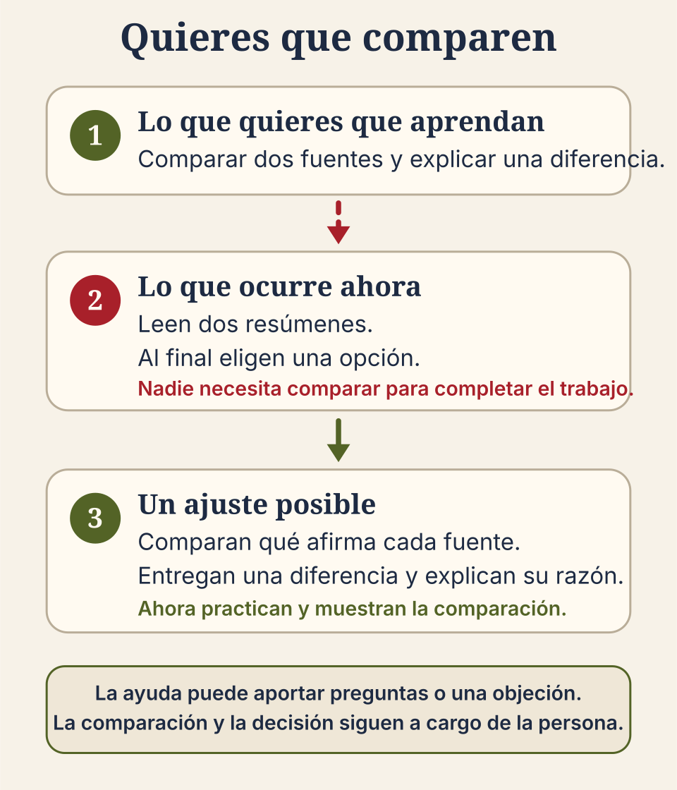

Un ejemplo completo antes de comenzar
Quieres que comparen, pero solo les pides elegir
Quieres que el grupo compare dos fuentes y explique cuál sostiene mejor una afirmación. Sin embargo, durante la actividad solo lee resúmenes y al final elige una opción. Para completar el trabajo nadie necesita comparar. Pedir una comparación breve con razones permitiría practicar y mostrar ese aprendizaje.

Cómo usar esta hoja
Completa cinco frases sobre una actividad. En cada pregunta marca sí, no o no estoy seguro. La primera respuesta que no sea sí indica qué conviene revisar primero. Si todas son sí, pide a otra persona que lea la actividad y te diga qué entiende.
Decide qué revisar primero
Primera respuesta “no”: ajusta esa parte antes de añadir más instrucciones o herramientas.
Primera respuesta “no estoy seguro”: prueba con un ejemplo o pide a otra persona que lea la actividad.
Todas “sí”: confirma que otra persona entiende qué aprenderá el grupo, qué entregará y qué trabajo seguirá siendo suyo.